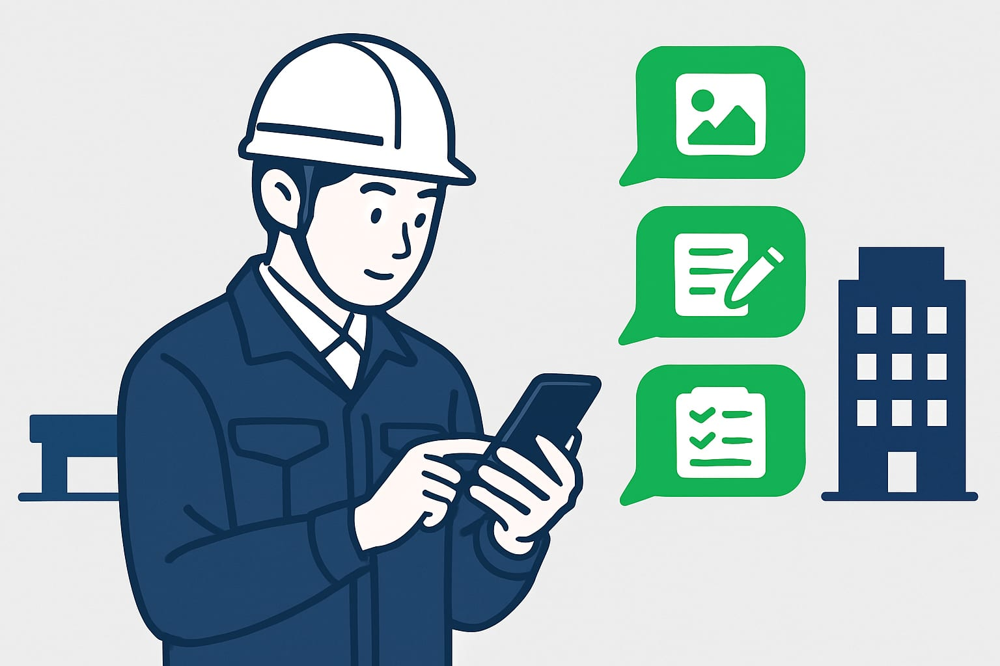

IT導入補助金で建設業がLINEのAIシステムを導入する流れ
現場写真、メモ、見積依頼、請求確認がLINEに集まり、事務所で打ち直す。そんな建設業の会社は少なくありません。この記事では、LINEで使えるAIシステムをIT導入補助金で導入する考え方、確認すべき経費、申請から利用開始までの流れを整理します。

この記事の要点
- LINE入口でも対象確認は必要
- 登録ツールかを先に確認する
- 交付決定前の契約に注意
- 見積・日報・請求から始める
- 金額や締切は年度で変わる
IT導入補助金で建設業がLINEのAIシステムを入れる考え方
IT導入補助金は、中小企業や小規模事業者が業務用のITツールを導入するときに使える補助金です。建設業でも、条件に合えば対象になる場合があります。
ただし、どのAIシステムでも必ず使えるわけではありません。原則として、補助金事務局に登録されたITツールや、登録された支援事業者との手続きが関係します。最新の公募要領で確認することが前提です。
LINEで使えるAIシステムも、入口がLINEというだけで判断されるものではありません。中身が業務用のITツールとして扱えるか、どの費用が対象になりそうかを見ます。
DX職人では、いつものLINEのトークから見積、日報、請求確認などを進める形を考えます。新しい画面を覚える負担を減らしつつ、制度上使える形かを相談時に確認します。
まず決めるのは、減らしたい打ち直し作業です
補助金の話から始める前に、先に決めたいことがあります。それは「どの手間を減らしたいか」です。
建設業では、現場で一度LINEに送った内容を、あとで見積書、日報、請求確認用の表に打ち直すことが多くあります。この二度手間を減らすと、AIシステムの使い道がはっきりします。
| 困りごと | LINEで送る内容 | AIシステムの返し方 |
|---|---|---|
| 見積の下書きが遅い | 工事内容、数量、写真 | 見積項目のたたき台 |
| 日報が夜に残る | 現場名、人数、作業内容 | 日報文の下書き |
| 請求確認に時間がかかる | 請求書の写真、金額 | 確認用メモの整理 |
| 写真が探せない | 現場写真、補足メモ | 現場別の整理案 |
LINEを使った業務改善の全体像は、LINE業務改善を建設業で始める方法と見積日報写真の整理でも詳しく書いています。まずは毎日発生する作業から選ぶと、導入後の効果が見えやすくなります。
補助対象になりそうな経費と、確認が必要な経費
IT導入補助金で見られるのは、システムの名前だけではありません。ソフトウェア利用料、クラウド利用料、初期設定費などがどう扱われるかを確認します。
たとえば、LINEを入口にしたAIシステムでも、業務用ソフトとして登録されているか、どの機能が補助対象になるかで判断が変わる場合があります。金額、補助率、対象期間は年度や枠で変わります。
| 経費の例 | 確認すること |
|---|---|
| AIシステム利用料 | 登録ITツールに含まれるか |
| 初期設定費 | 対象経費として認められる範囲か |
| クラウド利用料 | 対象期間と上限の扱い |
| 既存資料の整備 | システム導入費に含められるか |
| スマホやパソコン | 枠によって扱いが変わるため要確認 |
「これは対象になります」と早く決めつけるのは危険です。見積を取る前に、最新の公募要領と登録状況を確認しましょう。制度ごとに要件があるので、ご相談の際に確認します。
導入前に社内で決めておく5つのこと
申請の前に、社内で決めておくと話が早く進みます。難しい資料を作る前に、現場の使い方をそろえることが大切です。
- 最初に使う業務
見積、日報、請求確認のうち、どれから始めるかを決めます。 - LINEで送る人
社長、現場責任者、事務担当など、誰が送るかを決めます。 - AIが作る下書きの形
見積項目、日報文、確認メモなど、出力の形を決めます。 - 最後に確認する人
AIの返答をそのまま使わず、誰が確認するかを決めます。 - 入力しない情報
個人情報、取引先との機密情報、契約上の注意が必要な情報は扱いを決めます。
AIに入れてよい情報と避けたい情報は、AIに入力してよい情報、避けたほうがよい情報で整理しています。補助金の申請だけでなく、導入後の安心にも関係します。
申請から導入までの基本の流れ
IT導入補助金は、先に買ってから後で申請する流れではありません。一般的には、交付決定の前に契約、発注、支払いをすると対象外になる場合があります。必ず最新のルールを確認してください。
基本の流れは次の通りです。
- 困りごとを整理する
見積の打ち直し、日報作成、請求確認などを選びます。 - 使いたいAIシステムを相談する
LINEから使える形にできるか、業務に合うかを確認します。 - 補助対象になりそうか確認する
登録ITツール、対象経費、申請枠を確認します。 - 見積と申請内容を準備する
会社情報、導入内容、費用の内訳を整理します。 - 申請する
申請後は審査があります。必ず採択されるものではありません。 - 交付決定後に契約を進める
決定前に進めてよいこと、いけないことを確認します。 - 設定後、LINEで利用を始める
実際の現場メモや写真を使って、返答の形を整えます。 - 必要な報告を行う
支払い証憑や利用状況など、求められる資料を準備します。
この順番を間違えると、せっかくの費用が対象外になることがあります。特に契約と支払いのタイミングは注意が必要です。
LINEで見積・日報・請求確認を始める流れ

LINEで使えるAIシステムのよい点は、現場の人がいつもの送り方で始めやすいことです。新しいアプリを開くより、移動中や休憩中に送れるほうが続きます。
たとえば見積なら、次のように送ります。
○○邸、洗面所の床張替え。既存撤去あり。約6平米。写真3枚。
AIシステムは、工事項目、数量、確認事項の下書きを返します。事務担当はゼロから打たずに、内容を確認して見積書に整えます。見積の打ち直しについては、見積書の打ち直しを減らす、AIの使いどころも参考になります。
日報なら、現場名、人数、作業内容、残った課題を送ります。
A現場、2名。午前は墨出し、午後は下地補修。明日材料確認。
AIシステムは、日報文の下書きに整えます。夜に事務所へ戻ってから思い出すより、その場で送ったメモを使うほうが正確です。
請求確認では、請求書の写真や金額をもとに、確認用のメモを作れます。最終判断は人が行いますが、確認箇所をそろえるだけでも時間短縮につながります。
採択後は小さく始めて、確認の手間を減らします
補助金が採択された後も、いきなり全業務を変える必要はありません。まずは一つの現場、一つの作業から始めるほうが安全です。
最初のおすすめは、日報か見積の下書きです。どちらも毎日または毎週発生し、現場と事務所の間で内容が行き来します。AIシステムの効果を確認しやすい業務です。
始めるときは、次の順番にします。
- いつものLINEに送る文を決める
- AIが返す下書きの形を決める
- 事務担当が確認する箇所を決める
- 1週間ほど実際の内容で試す
- 足りない項目を追加する
大切なのは、AIに任せきりにしないことです。AIは下書き作りや整理が得意です。一方で、単価、契約条件、請求の可否などは人が確認します。
相談前に用意するものと、DX職人に聞くこと
相談前にすべてを完璧にそろえる必要はありません。次の情報があると、補助金とAIシステムの話を同時に進めやすくなります。
- 会社の業種、従業員数、主な工事内容
- 減らしたい作業の内容
- 現在使っている見積書や日報の形
- LINEで現場とやり取りしている内容
- 導入したい時期
- おおよその予算感
DX職人に相談するときは、次の点を聞いてください。
- LINEから使えるAIシステムとして何ができるか
- IT導入補助金の対象になりそうな費用はどこか
- 申請前に契約や支払いをしてよいか
- 導入後、誰がどの画面を使うのか
- 見積、日報、請求確認のどれから始めるべきか
IT導入補助金は、年度によって公募内容、締切、対象経費、補助率が変わります。この記事は2026年10月17日時点の考え方として読み、具体的な申請では必ず最新情報を確認してください。
よくある質問
建設業でもIT導入補助金でAIシステムを導入できますか？
建設業でも、条件に合えば対象になる場合があります。登録ITツールか、対象経費に含まれるか、申請枠に合うかを最新の公募要領で確認します。
LINEから使えるAIシステムも補助対象になりますか？
入口がLINEでも、中身が業務用ITツールとして登録されているかが重要です。対象になる費用とならない費用があるため、導入前に確認が必要です。
IT導入補助金の申請前に契約しても大丈夫ですか？
一般的には、交付決定前の契約、発注、支払いは対象外になる場合があります。進める順番を間違えないよう、必ず最新ルールを確認してください。
建設業ではどの業務からAIシステムを始めるとよいですか？
最初は見積の下書き、日報作成、請求確認がおすすめです。LINEで現場から送れる内容が多く、事務所での打ち直しを減らしやすい業務です。
IT導入補助金の金額や締切はどこで確認できますか？
金額、補助率、締切は年度や公募回で変わります。IT導入補助金の公式サイトと最新の公募要領を確認し、相談時にも対象範囲を確認します。